Hi, my name is
Tonje Totland
Jenssen.
I study Front-End
Development.
01.
About Me
Hi! My name is Tonje and I'm currently in the learning curve of becoming a software developer.
I enjoy using my creativity to develop and create stuff for the web. My journey studying and learning Front-End started back in August 2021 when I was ready for new challenges in my life. I love how I'm able to use my creativity to create stuff for the web as well as constantly learning and grow each day!
My main focus is trying to build accessible, responsive, neat and inclusive websites/products, and create the best digital experience for all kinds of users.
Here are some of the technologies I've learned to use and worked with this past year as a student:

HTML
- 
CSS
- 
JavaScript
- 
GitHub

WordPress
02.
Work
Here are some of the projects and works I've done so far during my two semesters at Noroff:
Rainydays
A website for a company called Rainydays selling durable rainjackets. Neutral theme with colours resembling nature. Built in VS Code and deployed on Netlify.
Technology used for this project:
HTML
CSS
GitHub
Community Science Museum
This is a website for a museum called Community Science Museum. Built with HTML, CSS and JavaScript.
Technology used for this project:
HTML
CSS
GitHub
Life Abroad
A travel blog named Life Abroad that contains a minimalistic colour theme. Built with HTML, CSS and JavaScript. Deployed on Netlify and fetched REST APIs created in WordPress.
Technology used for this project:
HTML
CSS
JavaScript
GitHub
WordPress
03.
Contact
Get in touch!
I'm always looking for new opportunities, my inbox is always open. If you have a question or just want to say hi, I'll try my best to get back to you.
Send me an email:
You can also reach me on LinkedIn and on GitHub.